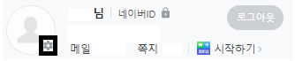
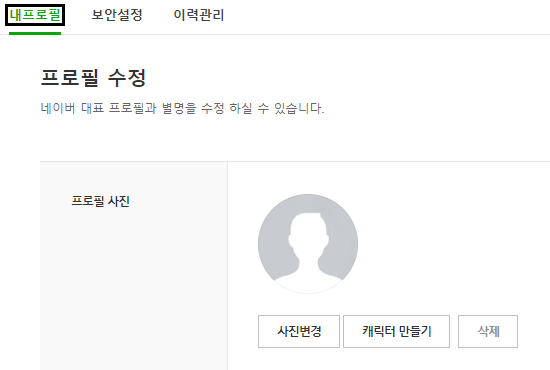
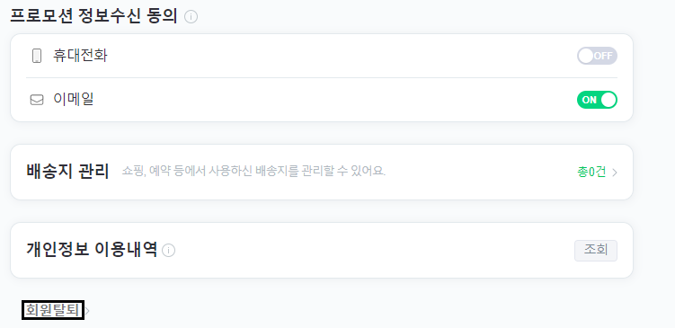
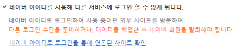

네이버 아이디는 휴대폰 번호 한 개로 최대 3개 까지 생성이 가능합니다.
따라서 아이디가 이미 3개를 보유하고 있다면, 새로운 아이디를 만들기 위해서 탈퇴 후 재가입을 하셔야 됩니다.
이번 포스팅에서는 네이버 아이디 탈퇴 방법 및 유의 사항에 대하여 소개해 드리도록 하겠습니다.
1. 네이버 아이디 탈퇴 및 삭제 방법
네이버 아이디를 삭제하기 위해서는 우선 네이버에 로그인 하신 뒤 프로필 이미지의 톱니바퀴 환경설정 아이콘을 클릭해 주세요.

환경설정을 클릭하시면, 첫 화면으로 프로필 수정이 보이실텐데 "내프로필"을 클릭해 줍니다.

다음으로 하단에 보이는 회색 글씨 회원탈퇴를 누르신 뒤 유의사항에 동의하시고 진행해 주시면 됩니다.

2. 유의사항
탈퇴 전에 조심 해야 할 부분이 몇 가지 있습니다.
* 탈퇴 하시려는 네이버 아이디와 관련된 모든 서비스 이용기록이 동시에 삭제됩니다.
따라서 해당 아이디와 연관된 서비스를 다시 확인해 보시는게 좋습니다.
해당 네이버 아이디에 연동된 서비스는 "회원탈퇴 안내" 페이지에서 다음 하이퍼 링크를 클릭 하시면 확인 가능합니다.

* 네이버 아이디를 삭제 하셔도 카페에 작성한 게시글이나, 웹상에서 남긴 댓글은 사라지지 않습니다.
그렇기에 삭제를 원하시는 글이나 댓글이 있다면 미리 삭제를 진행 하시는 것을 추천드립니다.
3. 네이버 아이디 재가입 기간
네이버 아이디 재가입 기간은 다음과 같습니다.
만약 삭제 하시려는 아이디가 한 달 내에 생성된 아이디라면 한 달이 지나야 다시 생성이 가능합니다.
또한 한 달 내에 생성된 아이디가 아니라고 하시더라도 네이버 아이디가 삭제되고 데이터베이스에서 완전히 소멸 되는 데 까지 어느 정도 시간이 걸릴 수 있습니다.
그렇기에 삭제 후 최소 4일 ~ 5일 경과 후에 다시 가입을 신청해 보시는 것이 좋습니다.
이상으로 네이버 아이디 삭제 방법에 관한 포스팅을 마치도록 하겠습니다.